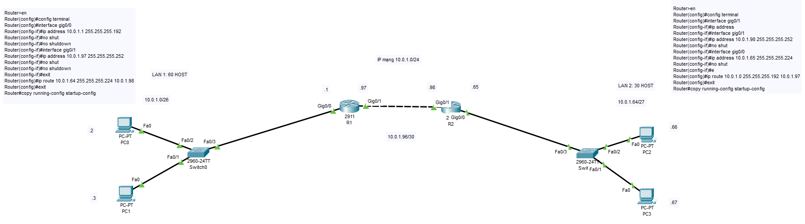

--------------------------------- Config Cisco --------------------------------
--- Router 1 ---
enable
config terminal
interface gig0/0
ip address (Network Address Host 1 + 1) (Subnet Mask Host 1)
no shut
interface gig0/1
ip address (Network Address Host 3 + 1) (Subnet Mask Host 3)
no shut
exit
ip route (Network Address Host 2) (Subnet Mask Host 2) (ip_R2_gần_R1)
exit
copy running-config startup-config
--- Router 2 ---
enable
config terminal
interface gig0/0
ip address (Network Address Host 3 + 2) (Subnet Mask Host 3)
no shut
interface gig0/1
ip address (Network Address Host 2 + 1) (Subnet Mask Host 2)
no shut
exit
ip route (Network Address Host 1) (Subnet Mask Host 1) (ip_R1_gần_R2)
exit
copy running-config startup-config
